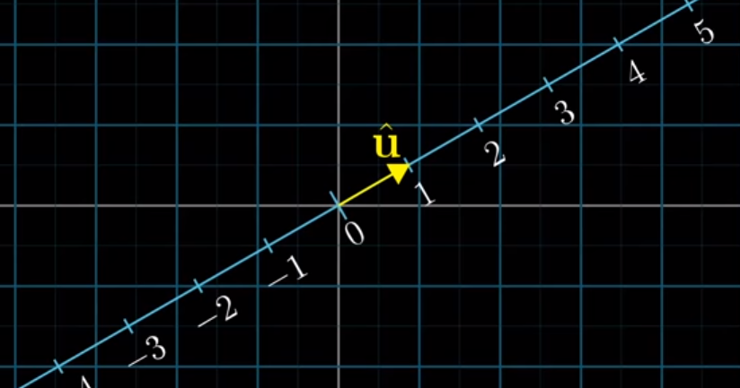
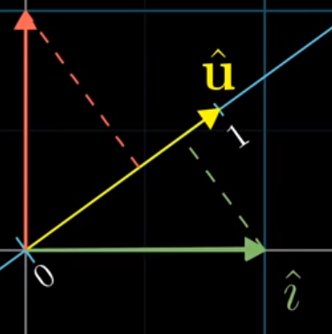
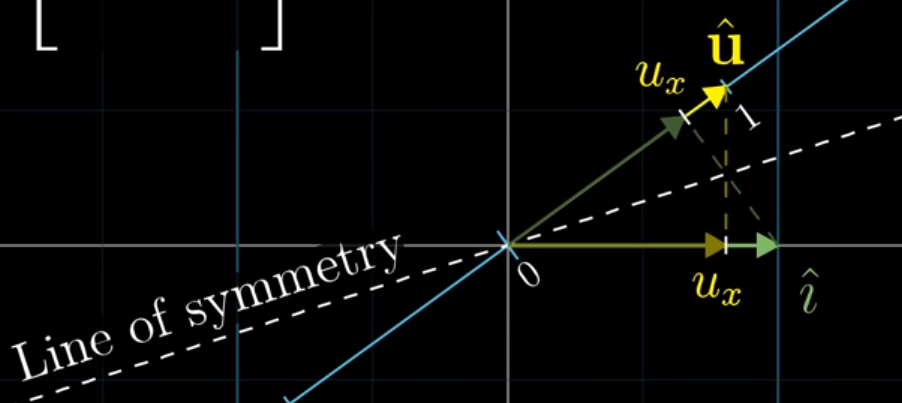
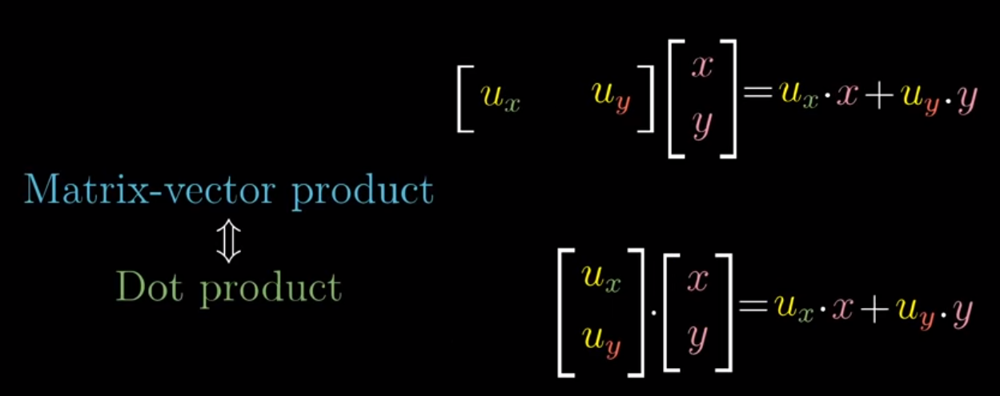

Dot Products
Overview
The dot product between two vectors is simply the sum of the element-wise products between the two vectors, or:
np.dot([a, b, c].T, [d, e, f].T) -> ad + be + cf
This takes us from two vectors of arbitrary, shared, 1 x n dimensions to just a scalar, but what does it actually mean?
Geometric Interpretation
Per (surprise) 3blue1brown, we can see that the dot product represents the length of the projection of one vector onto the other, multiplied by the length of that second vector
from IPython.display import Image
Image('images/dot_proj.PNG')
Note: If w were pointing in the bottom-left quadrant, its projection would be opposite that of v and thus the dot product would be negative.
Generally, if the dot product is:
- Positive, the vectors are mostly in the same direction
- Negative, pointed mostly opposite one another
- Zero, perpendicular
Furthermore, the order of the vectors doesn’t matter, and applying a scalar to v or w yields the same result of “multiply their dot product by the scalar”.
How does the math relate to projections?
One of the more elegant concepts of his entire series is the concept of the “duality” of the dot product. Specifically, how we can simultaneously think of dot products in terms of projections and linear transformations.
Plotting Both Simultaneously
This really came together for me when he plotted the two together– laying the 1D projection line arbitrarily along our 2D space, with the origins overlapping
We define a vector u as a unit step in our projection space, but we can clearly see that it is also a vector that lives within our original input space, simultaneously
Image('images/unit_vector.PNG')
Recall that our standard model for thinking about a Linear Transformation matrix, A, is looking at the columns to see where our unit vectors i and j land.
But because we’re projecting, in this case, from 2D to 1D (a line), i and j will just be points on the line
Image('images/proj_mat.PNG')
So how can we express the location of i and j in this new space?
Well, we can make use of the fact that all three vectors, i, j, and u are of unit length.
Image('images/unit_vectors.PNG')
Moreover, as we defined above, the dot product is simply the length of the projection multiplied by length of the second vector. And because the second vector is of unit length, the dot product is just the length of the projection.
If we draw a line that makes the projection line symetric to our vector i, we can show that the value of i projected onto the line is the same as the value of u projected onto the x-axis.
The same follows for j.
Image('images/u_hats.PNG')
Interchangeable
And so we can park the transformation matrix to the left of our vector and it neatly fits the form of matrix vector multiplication. In fact, the only difference between doing the multiplication this way and following the dot product form above is just transposing.
Image('images/equivalent.PNG')